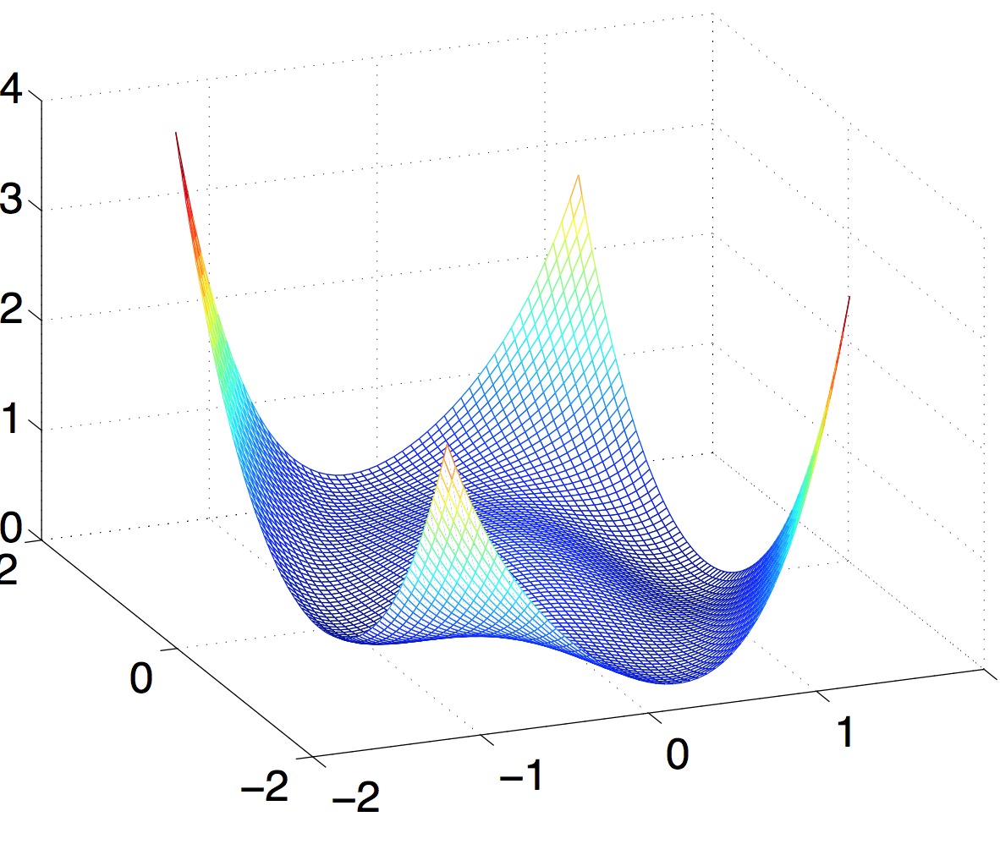

Low-rank Solutions of Linear Matrix Equations via Procrustes Flow
Stephen Tu, Ross Boczar, Max Simchowitz, Mahdi Soltanolkotabi*, and Benjamin Recht.
UC Berkeley, *USC
Not convinced?
Which operators work?
Abridged history of RIP matrix sensing
| Algorithm | Workhorse | Convergence | Sample complexity |
|---|---|---|---|
| Nuclear norm minimization |
SDP
SDP
|
- | $nr$ |
| Iterative hard thresholding |
Gradient + rank-$r$ SVD
Gradient + rank-$r$ SVD
Gradient +
rank-$r$ SVD |
$\log(1/\varepsilon)$ | $nr$ |
| Alternating minimization | Least squares | $\log(1/\varepsilon)$ | $nr^2\kappa^4$ |
What if we just used gradient descent?
Non-convex, but I've seen worse
The surface of $f(U)$ in a $\R^{2 \times 1}$ case.
What about initialization?
Matrix perturbation insights
Conclusion
Gradient descent for RIP matrix sensing converges linearly to the unknown matrix $M$.
Sample complexity of $\Omega(nr)$ for the Gaussian ensemble, and $\widetilde{\Omega}(nr)$ for other structured ensembles.
Poster session Wed 10am-1pm.